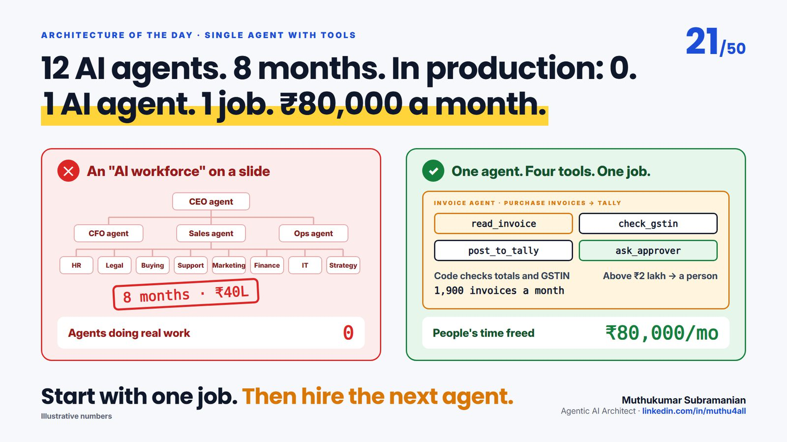

One AI Agent. One Job. ₹80,000 a Month Saved. Why Most Teams Start Too Big.
By Muthukumar Subramanian · Agentic AI Architect

Phase 3 starts today. Phases 1 and 2 were about the systems you already run and the data inside them. The next twelve days are about the agents themselves.
Here are two companies I keep running into.
The first one spent eight months building an "AI workforce": a CEO agent, a CFO agent, a procurement agent, a sales agent, twelve of them on one beautiful slide. They talked to each other in the demo. About ₹40 lakh later, none of them was doing real work.
The second one, a Coimbatore textile distributor, picked one boring job: typing purchase invoices into Tally. About 1,900 invoices a month, half of an accountant's day and a good part of another's. One agent took it over in six weeks. That's roughly ₹80,000 a month of people's time moved to work that needs a person. (Both companies are composites, and every number here is illustrative.)
The second company will have twelve agents before the first company has one.
The architecture today
A single agent with tools is the simplest real agent. Not a chatbot that only talks, and not a team of agents that talk to each other. One model, one job, a small set of tools, and a loop:
→ The model reads the task and decides which tool to call.
→ Your code runs that tool: read the PDF, look up the vendor, post the entry.
→ The result goes back to the model, which decides the next step.
→ It stops when the job is done, when it hits a limit, or when it needs a person.
That's it. Every major vendor now ships the same idea under a different name: OpenAI's function calling, Claude's tool use, Gemini's function calling, AWS's Bedrock AgentCore. MCP (Model Context Protocol), now run by the Linux Foundation's Agentic AI Foundation, gives you a standard way to plug the same tools into any of them.
👉 [IMAGE: A-day21-2-in-article-architecture.png]
Caption: The anatomy of one agent doing one job: instructions, four tools with tight inputs, plain-code checks, limits, a human above the threshold, and a log of every step. Grey is what you already have. Amber is new.
Where AI plugs in now: one job, four tools, hard limits
For the invoice job, the whole design fits on one page:
→ Instructions. What the job is, what "done" means, and when to stop and ask.
→ Four tools, no more. read_invoice extracts the fields. check_gstin validates the supplier's GSTIN against the vendor master. post_to_tally creates the purchase voucher. ask_approver sends anything unusual to a person. Each tool takes a fixed set of fields, not free text.
→ Plain-code checks. The model reads; code does the sums. Line items must add up to the invoice total. Tax must match the rate. A GSTIN has a format and a check character, and code verifies it before anything is posted.
→ Limits. At most eight steps per invoice. Anything above ₹2 lakh goes to the approver. A new vendor always goes to the approver.
→ A log. Every tool call, every input and every result, so you can answer the auditor later. That's Day 10's lesson, applied to one agent.
A small agent with hard limits beats a big agent with good intentions.
👉 [IMAGE: A-day21-3-in-article-pick-the-job.png]
Caption: How to pick the first job. Screenshot it before your next AI planning meeting.
Where it's heading with agents
The next eleven days of this series build up from here: agents that plan, routers that choose models, managers that delegate, agents that talk to other agents. All of it is made from this one unit. If you can't run one agent safely, you can't run twelve.
In two or three years, I expect most companies to have dozens of these small agents, each owned like a job role: invoice entry, vendor onboarding, collections reminders, lead research. Each one has a job description, limits and a manager. Pricing will follow the same shape: per invoice entered or per lead researched, not per seat. That's the serverless idea from Day 9, applied to work.
Watch it work
One invoice through the loop. Then a second one, bigger than the limit.
👉 [GIF: A-day21-4-in-article-agent-loop.gif]
Caption: Read, check the GSTIN, check the totals in code, post to Tally. The second invoice is above ₹2 lakh, so the agent stops and asks. All figures illustrative.
Pros
→ It ships in weeks, not quarters, and you can measure it in rupees and hours from the first month
→ Few tools mean few ways to go wrong, and every failure is easy to trace
→ It earns trust, which you'll need before anyone lets an agent do more
Cons
→ One job is a small win, and some leaders find it too small to fund
→ The tools are the real work: Tally connectors, vendor masters and messy PDFs take more time than the model
→ Small agents multiply. Without a registry and an owner for each, ten small agents become their own mess
The hard part
Picking the job. Most teams pick the most impressive job, not the most repetitive one. The right first job is boring, frequent, rule-heavy and checkable: you can tell in five seconds whether the agent got it right.
That choice is where a forward deployed engineer (FDE) earns their place: an engineer who sits inside the customer's team and ships on their real systems. They spend a week with the accounts team, count the invoices, find the twelve vendors whose PDFs are always odd, and agree what "done" means. Then an AgentOps engineer, who runs agents in production the way an SRE runs services, owns the limits, the alerts and the weekly error review. These titles are still settling. The work isn't.
And be honest about the saving. The agent doesn't fire anyone. It frees half a day for the accountant to chase GST mismatches and supplier payments, the work that actually needs a person. If you can't say where the freed time goes, the ₹80,000 is only on paper.
The opportunity
Every SME and every enterprise department has five or six jobs like invoice entry: vendor onboarding, bank-statement matching, lead research, delivery-note checks, collections reminders.
That's the market: task agents for one job done well. Sell it per job and per outcome, not as a platform: "your purchase invoices in Tally, ₹4 per invoice, with every exception sent to your accountant." Build the tools once for Tally, Zoho Books or SAP Business One, and reuse them across a hundred customers. The money is in the connectors and the checks, not the model.
Tools to try
OpenAI function calling with the Responses API · Claude tool use · Gemini function calling · AWS Bedrock AgentCore · MCP servers to plug the same tools into any model · and a plain Python script for the checks, which is still the most reliable tool in the stack.
Your turn 👇
Your company's first AI agent: one boring job, or a team of twelve? One word.
Tag the person in your accounts team who types in the most invoices every month.
Day 21 of 50 · follow along. Tomorrow: Day 22 · Your AI Agent Made a Plan. Step 3 Failed. It Kept Going.